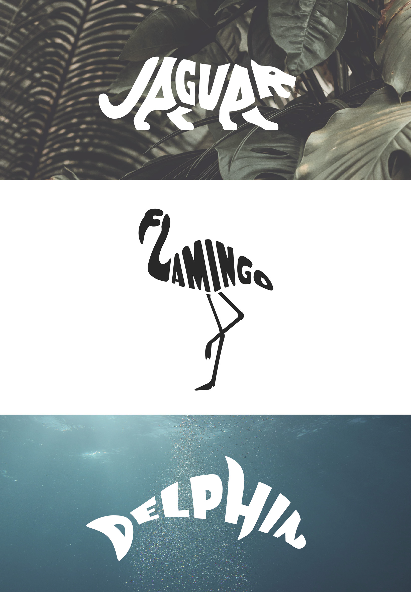

2023
Privates Projekt - Illustrationen aus Buchstaben
Im Fach "Typografie" habe ich mit Layouts und Schriften in Adobe
Illustrator und InDesign gearbeitet und experimentiert.
Inspiriert von diesen Übungen
habe ich in meiner Freizeit versucht, einige Tiere durch die Form ihrer Buchstaben
darzustellen.